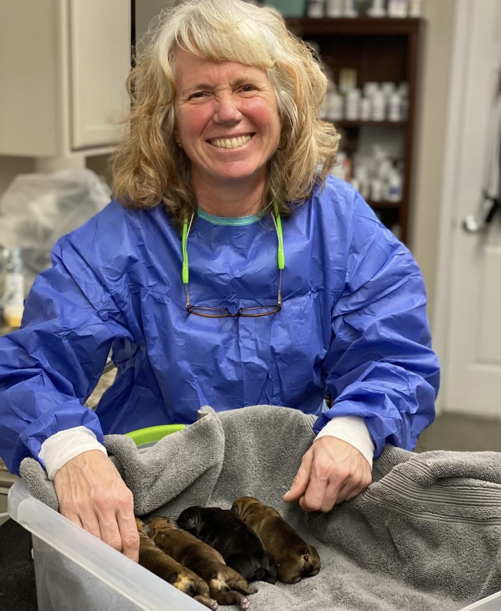

If you are looking for someone to solely work on big animals, I might not be your person. But if you just need someone to check up on them, give their advice, and occasionally go out and visit them, then I am the person for you. I have spent a lot of my adult life working with regular house hold pets, but I have done my fair share of larger animals. Right now, I am in charge of a couple of horses that require meds and an occasional check up. I can't say I am an expert on big animals, but I surely know what I am doing.
 Small animals is our speciality. Sue worked in a vet clinic for almost 20 years where she pretty much only worked on small animals. Surgery, referalls, perscriptions, checkups, anything you need with small animals, she can do it.
When we get to exotic animals, things get a little tricky. We aren't super involved with these kind of animals, but just like with any other animal, Sue is able to do just basic check ups to see how the animal is doing.